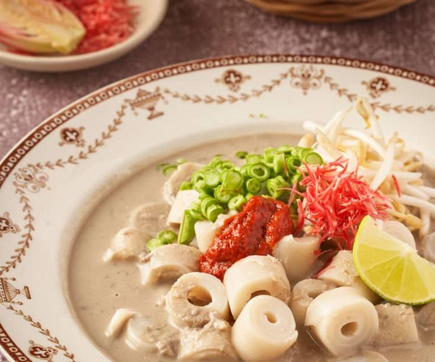

Food Paradise
Jom Makan Tradisional
Taste in the unique flavors of Kelantanese traditional cuisine, known for its rich coconut milk, distinct sweetness, aromatic spices, and unique combinations found nowhere else.
Food Paradise
Taste in the unique flavors of Kelantanese traditional cuisine, known for its rich coconut milk, distinct sweetness, aromatic spices, and unique combinations found nowhere else.
A must try food while in Kelantan:

A vibrant and aromatic Malaysian specialty featuring fragrant jasmine rice naturally stained blue with butterfly pea flower petals tossed with a fresh, local herbs (ulam), toasted coconut, and spiced fish floss. Served with a crispy spiced fried chicken leg,salted egg, fish crackers, and our signature budu sauce

A beloved Kelantanese dish that features fragrant rice cooked in rich coconut milk, served with a variety of flavorful accompaniments such as spicy sambal, fried chicken, salted egg, and fresh vegetables. It's a must-try for anyone looking to experience the authentic taste of Kelantanese cuisine.

A traditional Kelantanese noodle dish with a rich, flavorful broth and a variety of toppings, including meat, vegetables, and spices. It's often enjoyed as a hearty meal during the day.

A traditional Kelantanese dessert made from rice flour, coconut milk, and palm sugar, typically served warm with a drizzle of coconut cream. It's best purchased fresh from local markets or street vendors.